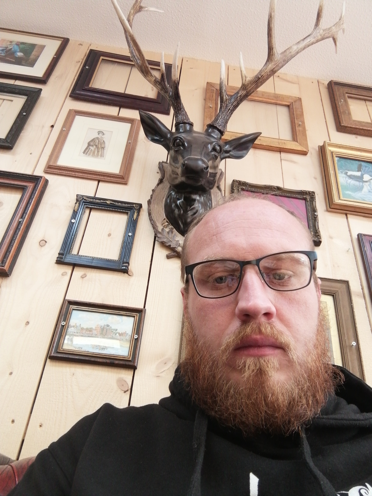
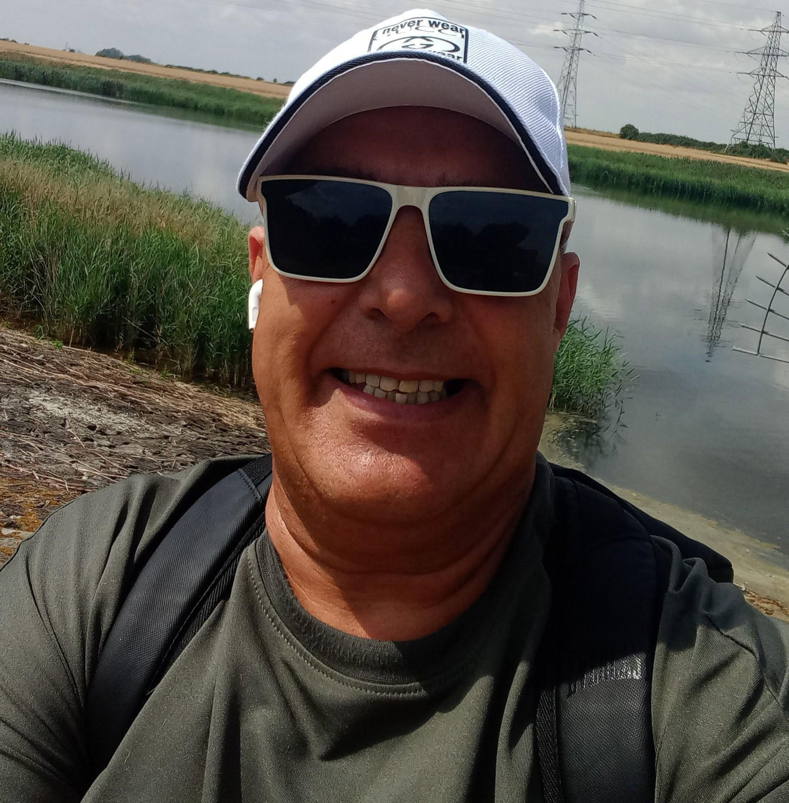

07:00–10:00Breakfast
Breakfast with Private Major
Presented by Private MajorMusic, local stories, features, community updates, news and more from across The Fens.

FENLAND ANGELS RADIO
Live shows, specialist programming and non-stop music across the week on Fenland Angels Radio — The Sound of the Fens.
MONDAY–THURSDAY
Breakfast and Drive Time anchor the weekday schedule, with FAR music and station programming around the live shows.
Music, local stories, features, community updates, news and more from across The Fens.

Independent music, station features and continuous FAR programming through the daytime.
Great music, local updates and company through the afternoon drive.
Continuous station music and programming through the evening and overnight.
FRIDAY
Friday follows the weekday core schedule, leading into the weekend.
Friday morning on FAR with music, local stories, features and the build-up to the weekend.
Independent music and station programming through the day.
Nick takes FAR into Friday evening with great music and local updates.
Friday night music continues on FAR into the weekend.
SATURDAY
Music through the day, leading into the Fenland Angels Radio Soundsystem Party with DJ InfinitI.
Independent music and FAR programming through Saturday daytime.
Two hours of high-energy dance music, requests, party anthems and specialist electronic sounds.

Music continues after the Soundsystem Party through Saturday night.
SUNDAY
A full day of Fenland Angels Radio music and station programming.
Independent music and continuous FAR programming throughout Sunday.